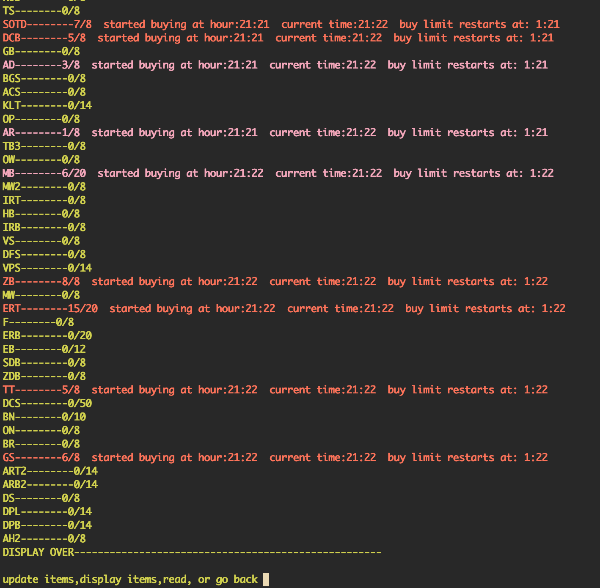
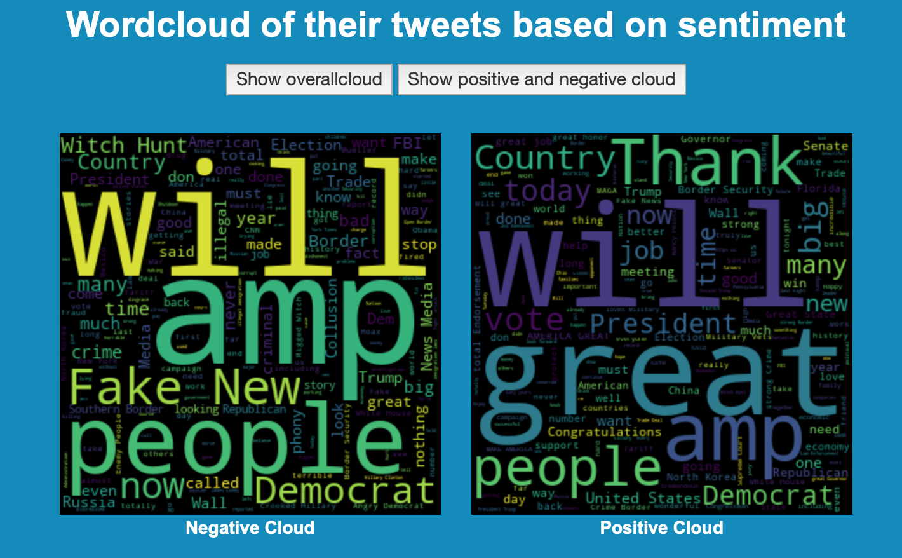

or swipe left
A tool that aids arbitrage on virtual commodity markets with additional text-to-speech and speech-to-text functionality for tracking investments.
Peer into your twitter data with over 15 different intuitive data visualizations
Wordcloud based on tweets from [@realDonaldTrump], showcasing filtered wordclouds based on sentiment
Create an account and track your progress
Create a heirarchy of categories and tasks
Edit tasks to set deadlines,create notes,notification dates,and track your progress
Recieve email notifications when you want
Sort tasks by deadline date
Django web app backed by mySQL, for helping newcomers at my university gym locate equipment